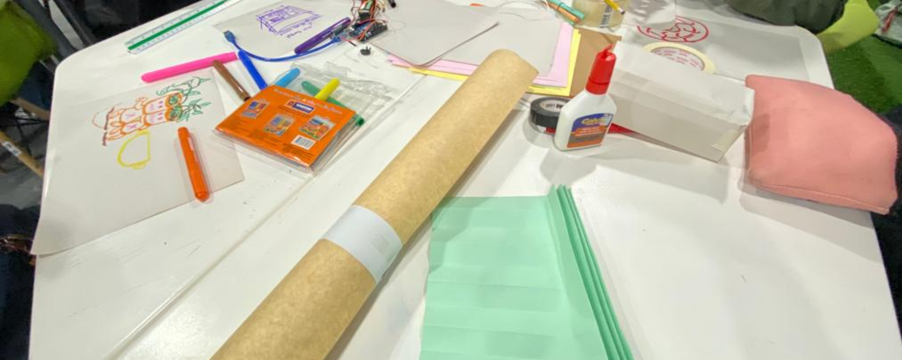

Semana 9
CLASE PRESENCIAL
En esta clase pudimos hacer algo de trabajo manual, llevamos papeles, cartulinas, cartón y empezamos a bocetear para hacer una maqueta de como queriamos que se viera nuestro proyecto.
CLASE PRESENCIAL
En esta clase pudimos hacer algo de trabajo manual, llevamos papeles, cartulinas, cartón y empezamos a bocetear para hacer una maqueta de como queriamos que se viera nuestro proyecto.
CLASE VIRTUAL
En esta clase aprendimos las bases de como usar tinkercad, vimo sun poco de teoria y practica, ademas vimos diseños 3d en tinkercad, cada grupo buscó 5 diseños cada uno, lo presentamos en clase y luego como tarea tuvimos que juntar entre todo el grupo 12 diseños justificando el por quó escojimos esos diseños para nuestro proyecto.